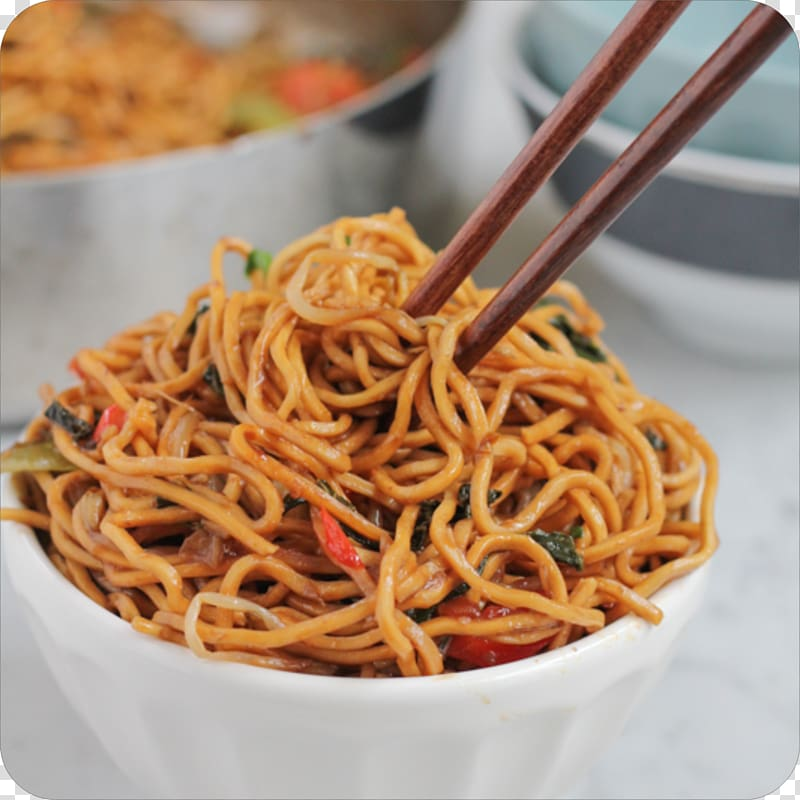

Lo Mein Noodles Recipe

Description
These lo mein noodles were created from a blend of multiple recipes. Add your favorite meat for a main dish or serve as a side. If serving with meat, cook the meat separately.
Ingredients
- 1 (8 ounce) package spaghetti
- 3 tablespoons low-sodium soy sauce
- 2 tablespoons teriyaki sauce
- 2 tablespoons honey
- ¼ teaspoon ground ginger
- 2 tablespoons vegetable oil
- 3 stalks celery, sliced
- 2 large carrots, cut into large matchsticks
- ½ sweet onion, thinly sliced
- 2 green onions, sliced plus more for garnish
Home